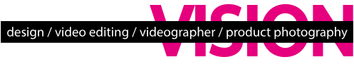

About me:
Меня зовут Ника. Я видеограф, монтажёр, дизайнер и автор предметной съёмки. Работаю с атмосферой, светом и деталями, создавая визуальные истории с чистой эстетикой. Использую стабилизатор DJI Osmo Mobile 6 и камеру Nikon Coolpix P610 с объективом Nikkor 60x Wide Optical Zoom ED VR. Люблю, когда изображение говорит само за себя — просто, точно и красиво.